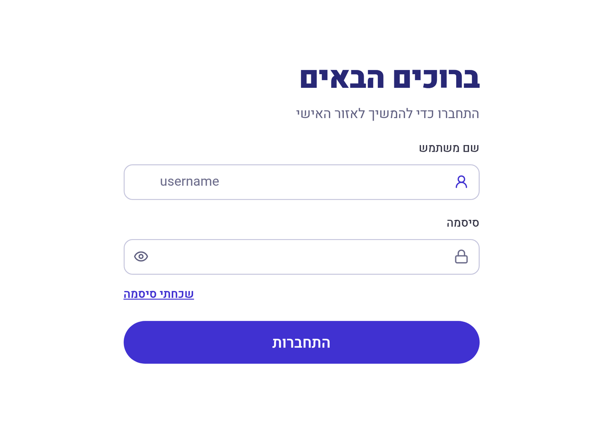
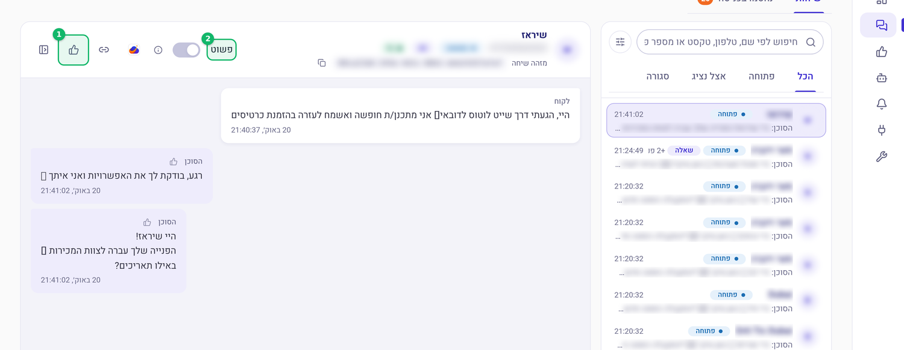
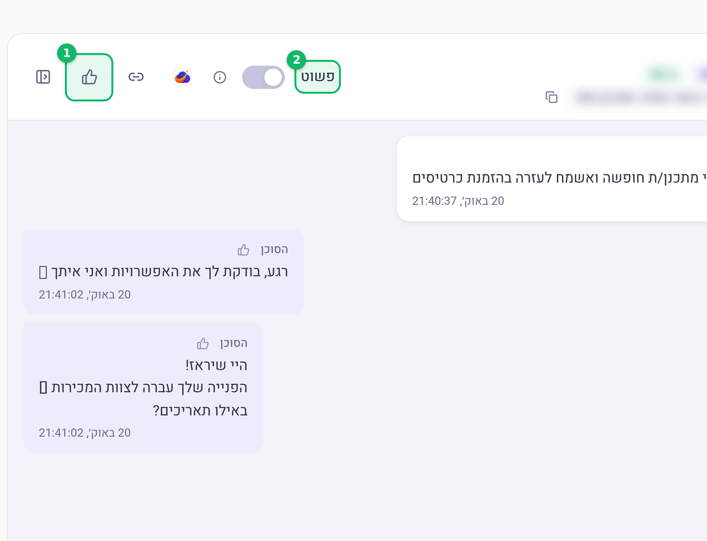
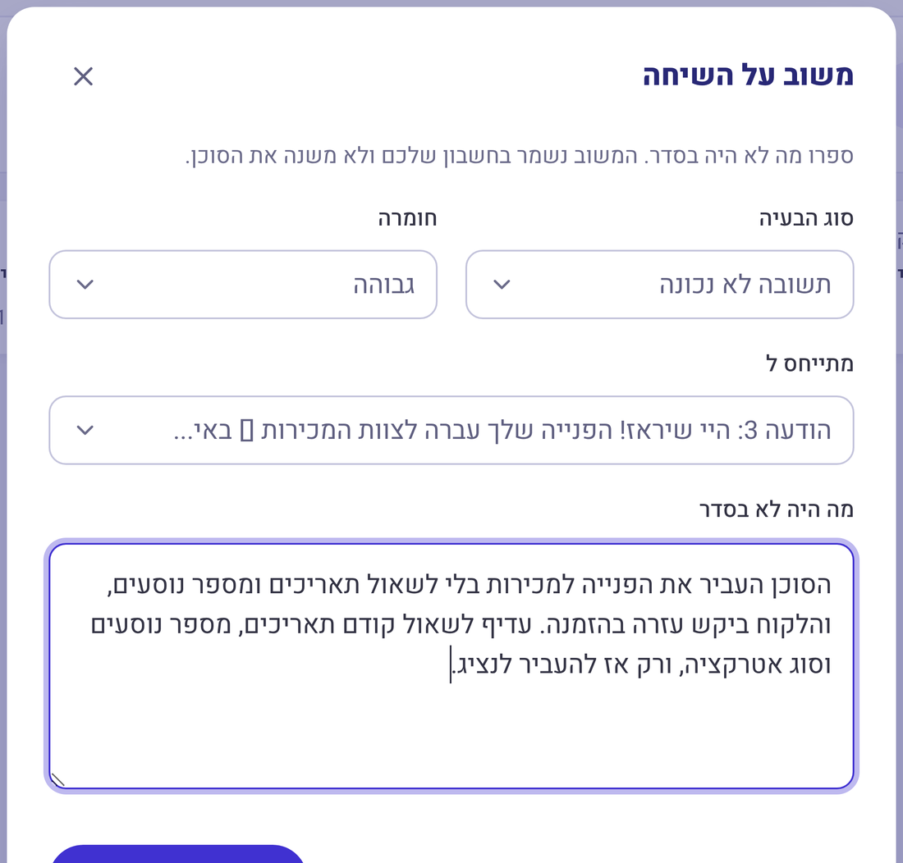
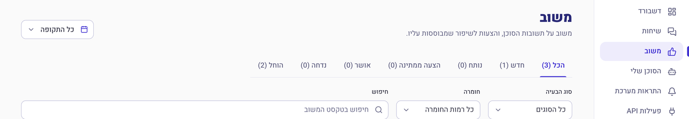

עם המשתמש והסיסמה שקיבלתם. אם הסיסמה נשכחה, יש קישור "שכחתי סיסמה" מתחת לשדות.

בתפריט הימני: "שיחות". אפשר לחפש לפי שם, טלפון או טקסט, ולסנן לפי פתוחה / אצל נציג / סגורה. לחיצה על השיחה פותחת אותה.

הכפתור הוא סימן היד המרימה. מתחתיו נפתחת החלונית של המשוב, כשהיא כבר מכוונת לשיחה הזו.
אם רואים יותר מדי שורות של כלים ושלבים, החליקו את "פשוט" (2) כדי לראות רק את ההודעות.


בתפריט: "משוב". כל משוב מקבל סטטוס, ואתם רואים בדיוק איפה הוא עומד.

משוב כללי לא אומר לנו מה לתקן. עובדה, שם, מספר.
בשדה "מתייחס ל" בוחרים את ההודעה שפספסה. זה חוסך לנו חיפוש, ומראה לנו לאיזה שלב בשיחה הכוונה.
אם אתם יודעים את התשובה, כתבו אותה. זה הופך את המשוב לידע חדש בסוכן, לא רק לתלונה.
גבוהה: מידע שגוי, מספר כספי, לקוח תקוע או מפספס הזמנה.
בינונית: חסר מידע, תשובה חלקית, ניסוח מבלבל.
נמוכה: טון, אורך, ניסוח קוסמטי.
שלוש בעיות בהודעה אחת נקראות כתלונה כללית. שלושה משובים קצרים מטופלים כמו שלושה תיקונים.
לא נשלח קישור, לא נמצאה הזמנה, לא הועבר לנציג: בוחרים "בעיה בכלי או בחיבור" וכותבים מה בדיוק לא עבד. אלו באגים, לא ידע חסר.
לא טלפון, לא ת"ז, לא כתובת. מספיק שם פרטי או מספר השיחה. המשוב נשמר אצלכם, אבל עדיף נקי.